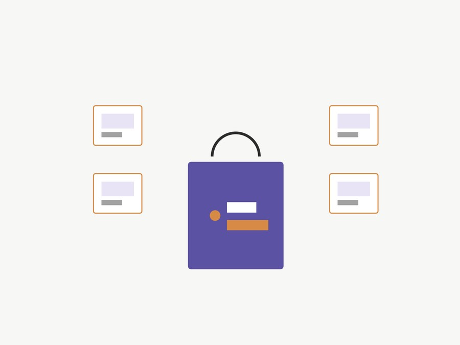

Illustrative graphic, not an actual screenshot.
A full-stack e-commerce site for a fictional travel-gear brand, built solo as my Computer Information Systems senior capstone project. The goal was to build a genuinely complete online store — accounts, cart, checkout, and order management — rather than a tutorial-scale demo.
/admin/ path to a custom URL, with a honeypot decoy left at /admin/ to log bot login attemptsWhat an ORM is actually doing. Django's Object-Relational Mapper lets you write Python classes instead of hand-written SQL, then translates your Python calls into real SQL behind the scenes. Product.objects.filter(category=categories, is_available=True) doesn't loop over Python objects — it compiles down to something like SELECT * FROM product WHERE category_id = ? AND is_available = 1 and runs it against the database. The ForeignKey(Category, on_delete=models.CASCADE) line is the ORM's way of declaring a real relational foreign key: every product row stores a category ID, and on_delete=CASCADE tells the database what to do to a product if its category is ever deleted (delete it too, rather than leave an orphaned reference).
class Product(models.Model):
product_name = models.CharField(max_length=200, unique=True)
slug = models.SlugField(max_length=200, unique=True)
price = models.IntegerField()
images = models.ImageField(upload_to='photos/products')
stock = models.IntegerField()
is_available = models.BooleanField(default=True)
category = models.ForeignKey(Category, on_delete=models.CASCADE)
def averageReview(self):
reviews = ReviewRating.objects.filter(product=self, status=True).aggregate(average=Avg('rating'))
avg = 0
if reviews['average'] is not None:
avg = float(reviews['average'])
return avgThe store view handles both the full catalog and per-category browsing, with pagination on either path:
def store(request, category_slug=None):
if category_slug != None:
categories = get_object_or_404(Category, slug=category_slug)
products = Product.objects.filter(category=categories, is_available=True)
paginator = Paginator(products, 1)
else:
products = Product.objects.all().filter(is_available=True).order_by('id')
paginator = Paginator(products, 3)
page = request.GET.get('page')
paged_products = paginator.get_page(page)
...How the guest cart actually works. A browser that isn't logged in still has a session — a small piece of state Django keeps on the server and points to with a cookie in the visitor's browser. The cart ties itself to that session key rather than to a user account:
def _cart_id(request):
cart = request.session.session_key
if not cart:
cart = request.session.create()
return cartEvery cart lookup in the app branches on request.user.is_authenticated: logged-in users' carts are found by user=request.user, guests' carts are found by cart_id=_cart_id(request). That's the mechanism behind the guest-cart-merges-on-login feature mentioned above — the same cart data model works for both cases, with the session key standing in for an account until the visitor actually creates one.
Coursework project — Bachelor of Science, Computer Information Systems & Finance — Westminster College